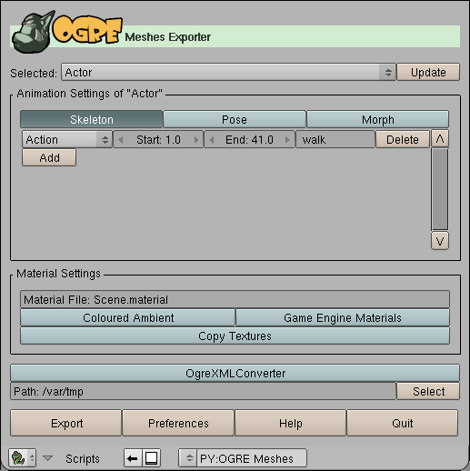
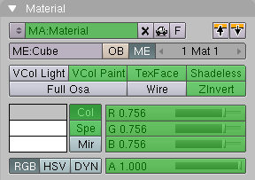
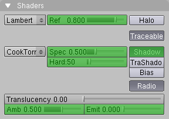
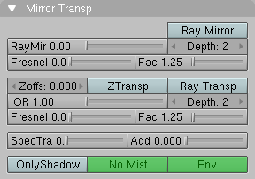
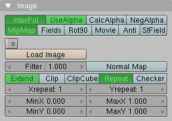
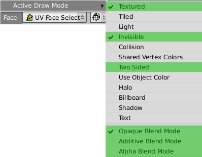
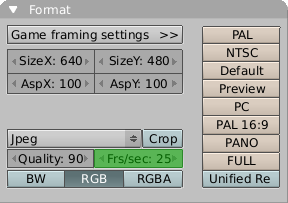
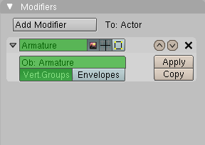
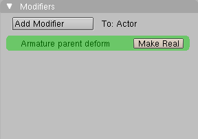
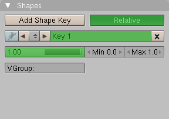

Blender is an open source 3D content creation suite for modeling, animation, rendering and video post production. The OGRE Meshes Exporter is a set of python scripts to run directly within Blender. Currently it supports the export of
The script needs access to standard Python modules not shipped with Blender. Consult the Blender documentation at www.blender.org how to incorporate Python with Blender.
There is a one-to-one correspondence:
The OGRE Meshes Exporter maps Blender Meshes (ME) to Ogre Entities. Please refer to the OGRE Scene Exporter for the mapping of Blender Objects (OB) to Ogre SceneNodes.
To export Blender Meshes (ME) do:
You will get a detailed log of the export process. All files are exported in the OGRE XML format. Use the OgreXMLConverter of your OGRE installation to convert the generated XML files to binary .mesh and .skeleton files.

Screenshot of the exporter interface.
The script loads and saves its options to a text buffer "OgrePackage.cfg" inside the current .blend file. You can save the current settings, if you save the .blend file after quitting the exporter.
The script supports sticky and per face vertex uv coordinates, smoothed and non-smoothed normals, vertex colours. Each rectangle face is automatically converted into two triangle faces in the exported mesh. The exporter defaults to using 16 bit indices but if the submesh vertex count exceeds the 16 bit limit then 32 bit indices are used.
The script does not support subdivision surface (SubSurf) options. To export a SubSurf object, you have to convert it into a Mesh object, "Object → Convert Object Type... → Mesh (keep original)".
The script does not support the "Double Sided" mesh option, use the "Two Sided" face option instead.
To force the export of vertex colours, select "VCol Light" in the meshes' materials and export with "Game Engine Materials" disabled.
In contrast to OGRE, Blender treats material, uv texture and blend mode separately. Also Blender distinguishes between material appearance in the game engine and material appearance in the rendered results.
The name of the exported material is the same as in Blender. If the "Two Sided" face option is set, the suffix "/TWOSIDE" is appended. If the "TexFace" material option is set, the suffix "/TEXFACE" and the name of the texture image that is assigned with the UV/Image Editor is appended. The "Two Sided" face option has no effect in Blender's rendering results and is evaluated on export for convenience only.



Blender's material settings that affect the exported OGRE material are marked green.
The script exports image textures with "Map Input" set to "UV" and "Map To" set to "Col" and optional "Alpha". The supported image options are marked green.
| InterPol | MipMap | resulting filtering |
|---|---|---|
| yes | yes | trilinear |
| yes | no | linear linear none |
| no | yes | bilinear |
| no | no | none |
If a material is assigned to face, only the properties that affect the appearance in the game engine are exported. These are the "Col" and "Spe" colours, the "Amb", "Spec" and "Hard" factors and the "VCol Paint" and "TexFace" options.
Textures assigned with the UV/Image Editor are exported. Note that material image textures, which can be exported as rendering engine materials, give you more control over filtering and texture address modes.
Blender's face settings affect the mesh appearance only in the game engine. The properties exported by the script are marked green.
The animation speed in the export in terms of frames per second is taken from the corresponding scene render button.

Blender's format setting that affect the exported OGRE animation is marked green.
Armature animation export is available if the mesh has an armature as parent deform or an armature modifier and that armature has at least one action. Armature animations are exported based upon keyframe ranges and action names. You can choose any frame as start and end frame of an animation. In order to export armature animations of a mesh you don't have to select the armature separately. On export, the script will sample the bone poses of the selected action frame by frame.


The script supports a parented armature as well as an armature modifier.

The script exports relative shape keys.